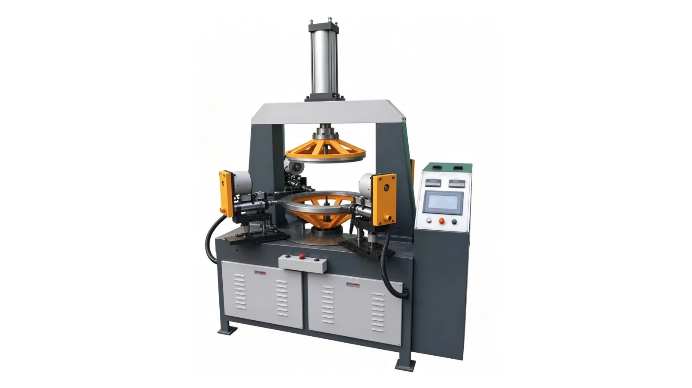
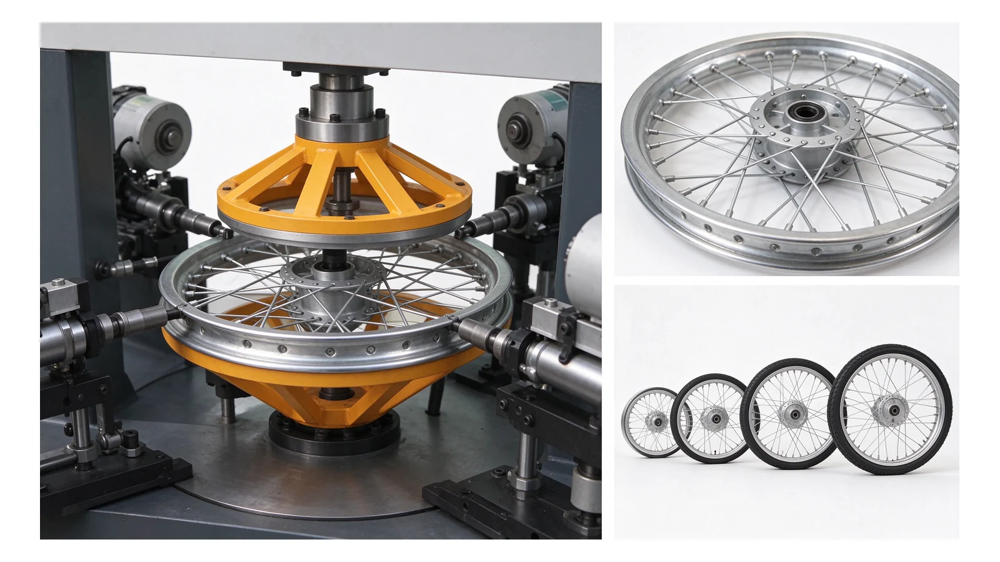

Complementary Machines
Other rim and wheel stations on the same line.
A semi-automatic station for lacing a wheel and tightening the nipples: the wheel is turned by a gear motor while four torque heads hold the tightening force, so every spoke in the wheel ends at the same tension instead of at whatever the operator's wrist allowed. A pneumatic cylinder pushes a mould down onto the rim to press or loosen it, and a photoelectric switch reports the open and closed state to the control, which is why the cycle cannot start until the rim is clamped. Rims of different diameters and widths are handled by changing the mould rather than the machine, and the two-button start keeps both hands away from the torque heads.

Wheel size, output and the tightening force in one table.
| Function | Spoke lacing and nipple tightening of motorcycle and bicycle wheels |
| Applicable wheels | Spoked wheels built on rims from 14 to 21 inch |
| Rim size | 14–21 inch, by mould |
| Rim width | 10–100 mm |
| Capacity | 80–160 wheels per hour, depending on spoke count and rim size |
| Operating mode | Semi-automatic: the operator loads the rim and spokes, the machine turns and tightens |
| Wheel rotation | Gear motor drives the wheel during lacing |
| Tightening | Four torque motors control the tightening force, adjustable within the set range |
| Maximum torque | 1.5 N·m |
| Clamping | Pneumatic cylinder pushes a mould onto the rim to press or loosen it |
| Position sensing | Photoelectric induction switch reports the open and closed state of the clamp |
| Total power | 1 kW |
| Control | PLC with interface for cycle and torque settings |
| Compressed air | 0.4–0.6 MPa |
| Start mode | Two buttons, pressed together |
| Machine dimensions | 1650 x 1200 x 2100 mm |
| Machine weight | About 900 kg |
* Specifications as supplied for this configuration. Final data confirmed on the proforma invoice.
Wheel turning and clamping, the torque heads, then changeover.
Gear motor turns, air clamps
| Rotation | Gear motor turns the wheel, so the spokes come to the heads instead of the operator reaching around the wheel |
| Clamping | Pneumatic cylinder pushes the mould onto the rim; the same cylinder releases it at the end of the cycle |
| Position signal | Photoelectric induction switch confirms the clamp is closed before the cycle is allowed to run |
| Moulds | A mould per rim size and width; changing the mould is the changeover between wheel families |
| Frame | Welded frame with a gantry over the wheel, 1650 x 1200 x 2100 mm and about 900 kg |
Four heads, one force setting
| Heads | Four torque motors, working on the nipples from both sides of the wheel |
| Force | Tightening force adjustable, up to 1.5 N·m per head |
| Consistency | Every spoke is tightened to the set force, which is what makes the wheel true and the tension even |
| Setting | Torque value is set from the interface and kept for the production run |
PLC, two-hand start, semi-automatic cycle
| Controller | PLC with an operator interface for torque, cycle and status |
| Start | Two buttons pressed together, keeping both hands clear of the heads |
| Cycle | Load, clamp, rotate and tighten; the operator unloads and repeats |
| Output | 80 to 160 wheels per hour, set by the spoke count and the tightening time |
| Changeover | Mould change for rim size and width; no programming of the wheel geometry |
The station and the wheels it produces.

Why torque control matters on a spoked wheel.
Four torque heads tighten to one set force, so the wheel runs true and the spokes share the load instead of a few taking it all.
Four nipples are tightened per step while the gear motor turns the wheel, which is where 80 to 160 wheels per hour comes from.
The pneumatic mould presses the rim flat and reports closed state, so the wheel cannot shift while the nipples are turned.
14 to 21 inch and 10 to 100 mm width are covered by changing the mould, which keeps a mixed order book on one station.
The two-button start is a safety decision as much as an operating one: both hands away from the torque heads before the cycle begins.
Spoked wheels built in volume and in custom batches.
Air, power and the space the gantry needs.
| Power supply | As per the motor configuration, confirmed at order; total connected load 1 kW |
| Compressed air | 0.4–0.6 MPa, clean and dry, at the clamping cylinder |
| Floor | Level floor able to carry about 900 kg plus the wheels, with clearance for the gantry height of 2100 mm |
| Moulds | One mould per rim size and width; further sizes quoted separately |
| Spokes and nipples | Supplied by the customer, matched to the rim and the lacing pattern |
| Environment | Dry shop area; the pneumatic circuit needs a filter and regulator at the machine |
Questions buyers ask before a spoke tightening station is ordered.
14 to 21 inch, with rim widths from 10 to 100 mm. Each size and width needs its own mould, and the machine itself stays the same.
80 to 160, depending on the spoke count and the tightening time set for the wheel. Fewer, thicker spokes tighten faster than a dense lacing pattern.
Four torque motors hold the force, adjustable up to 1.5 N.m, so every nipple in the wheel is tightened to the same value rather than to the operator's feel.
It is semi-automatic: the operator loads the rim and spokes and unloads the wheel, while clamping, rotation and tightening run in cycle. The two-button start is part of that.
0.4 to 0.6 MPa of clean dry air and 1 kW of power, a level floor for about 900 kg, and clearance above the 2100 mm gantry for loading.
Other rim and wheel stations on the same line.
Rim diameter, width, spoke count and the wheels per shift are enough to confirm the mould, the torque setting and the output.